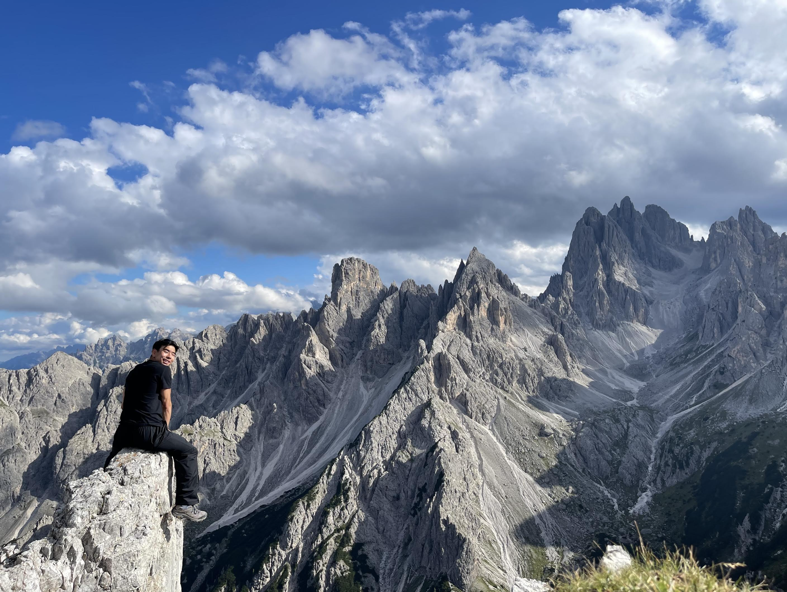
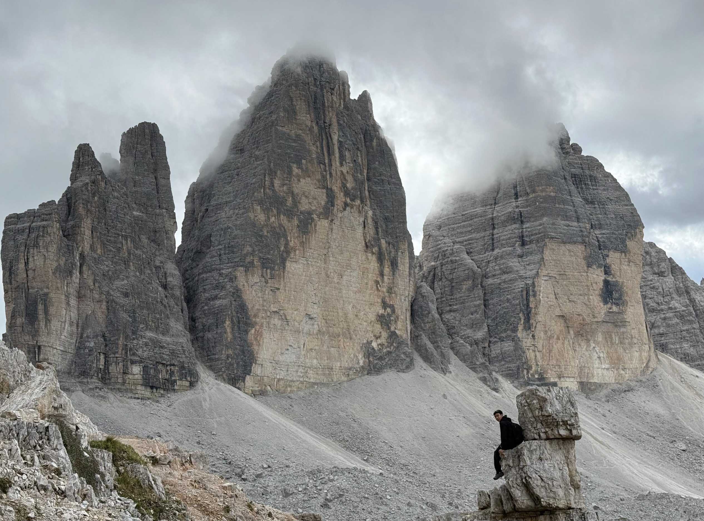
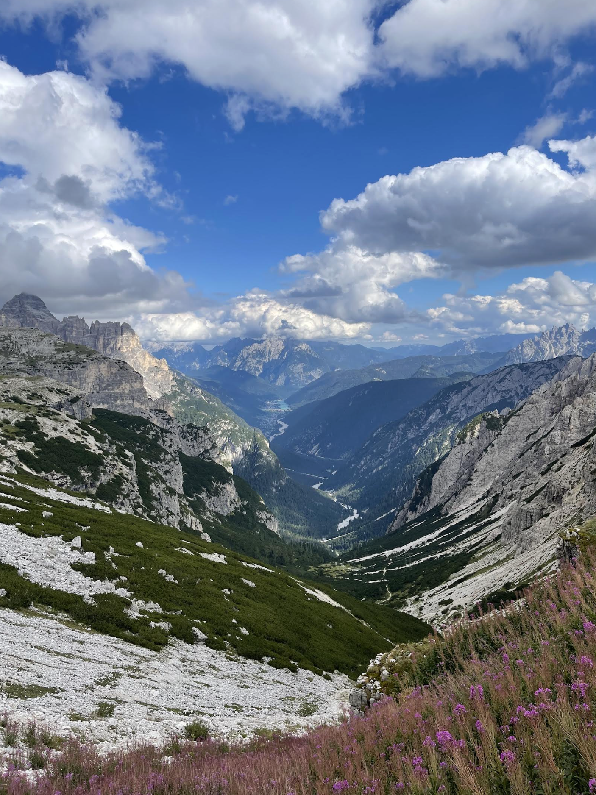
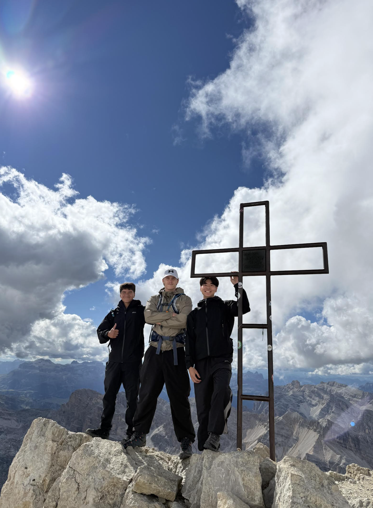
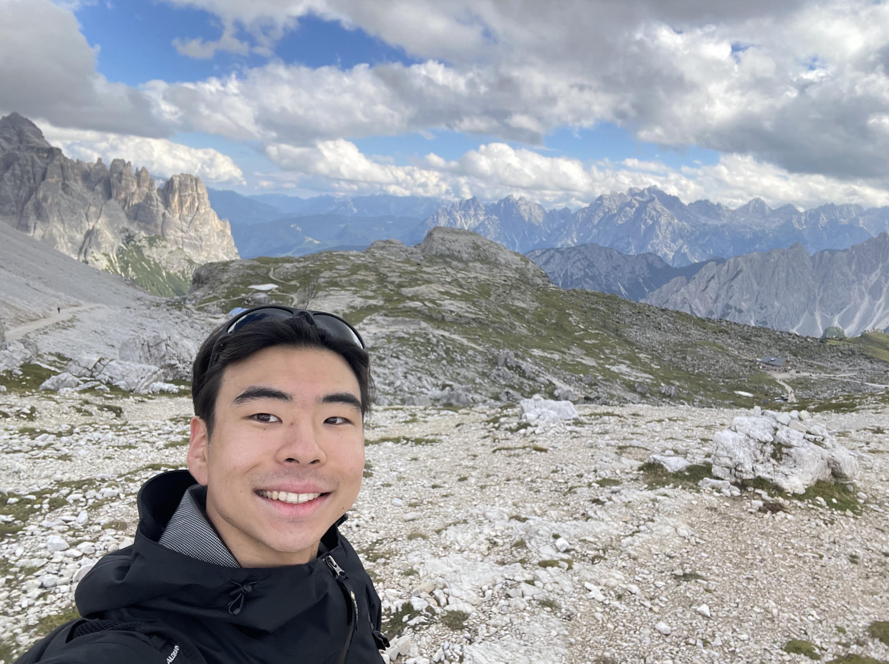

rikomiyagi819
Dolomites, Italy





Hiking
The Dolomites, Italy
Hiking through the Dolomites in northern Italy. Trails up to 2,999m with views across the Cadini di Misurina range and Tre Cime di Lavaredo — some of the most dramatic mountain terrain in Europe.